1. 系统概述
光伏运维AI智能分析平台是一套面向光伏电站运维全流程的数字化管理系统，集实时数据采集、AI智能分析、自动告警、工单闭环、备品备件管理、巡检调度于一体，支持多电站集中监控与精细化运营。
🏭
多电站管理
支持多电站集中监控，按电站切换视图，对比分析 PR、发电量等指标
🤖
AI 智能分析
集成大语言模型（通义千问），自动生成运维日报、缺陷分析、预测建议
🔔
智能告警
自定义告警规则，实时评估触发，自动关联工单，全生命周期追踪
📋
工单闭环
看板式工单管理，支持拖拽流转、状态追踪、备注协作
📊
数据可视化
ECharts 图表库，发电曲线、功率预测、趋势分析、多维对比
🔒
安全审计
JWT 认证 + RBAC 角色权限，全量操作审计日志可追溯
2. 技术架构
| 层次 | 技术选型 |
|---|
| 前端 | HTML5 + CSS3 + 原生 JavaScript + ECharts 5.x |
| 后端 | Node.js 22 + Express.js 4.x + Better-SQLite3 |
| AI 引擎 | DashScope 兼容端点 · 通义千问 qwen-plus / qwen-vl-max |
| 实时通信 | WebSocket (ws) 实现实时告警推送 |
| 认证 | JWT (jsonwebtoken) + bcrypt 密码加密 |
| 部署 | 单服务器单体架构 · 端口 3000 · systemd 守护进程 |
3. 电站总览
电站总览是平台的核心首页，提供一站式的运维数据全景视图，涵盖发电量、功率、PR、设备状态、健康评分等关键指标。
3.1 KPI 指标卡片（6 项）
- 今日发电量 — 累计 kWh，含环比增幅百分比
- 当前功率 — 实时 kW，显示发电状态（☀ 发电中 / 🌙 夜间停机）
- 综合效率 PR — 性能比率百分比，颜色编码（≥80% 绿色 / 60-80% 橙色 / <60% 红色）
- 异常组串数 — 实时异常检测计数
- 设备可用率 — 组串 / 逆变器在线率，含环比趋势
- 收益估算 — 基于发电量和电价（¥0.4/kWh）自动计算
3.2 电站健康评分
综合评分体系（满分 100 分），从多个维度加权计算：
- 告警扣分 — 严重告警 -5 分/条，警告 -1 分/条
- 工单积压 — 待处理工单 -3 分/单
- 逆变器在线率 — 全在线不扣分
- 组串健康率 — 异常组串按比例扣分
- 性能指标 PR — PR 低于基线扣分
3.3 可视化图表
- 7 日关键指标趋势 — 发电量、PR、异常组串数的折线/柱状组合图
- 发电曲线（24h） — 功率曲线 + 辐照度曲线双轴叠加
- 功率预测（3 天） — AI 预测 vs 实际功率对比，含置信区间和 MAPE 指标
- 多电站对比 — PR、发电量、设备可用率横向对比雷达图
- 告警严重度分布 — 饼图/柱状图展示 严重 / 警告 / 提示 分布
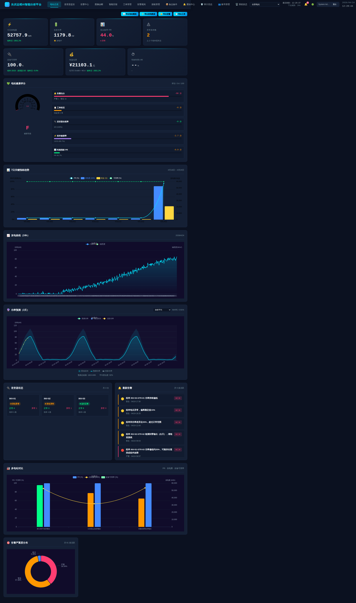
图 1：电站总览 — 6 项 KPI、健康评分、发电曲线、功率预测、逆变器状态、最新告警、多电站对比
3.4 逆变器状态面板
实时展示各逆变器状态卡片，含正常/异常组串计数，点击可钻取至逆变器详情页。
3.5 最新告警列表
展示最近 5 条活跃告警，按严重度排序，支持一键「转工单」快速创建关联工单。
3.6 数据导出
支持导出电站概览、发电数据、告警数据、工单数据为 CSV 文件。
4. 逆变器监控
提供逆变器级别的精细化监控，支持选择具体逆变器查看组串级功率曲线和运行状态。
- 逆变器下拉选择器，按电站过滤
- 组串级功率曲线实时展示
- 组串状态网格（正常/异常可视化标识）
- 功率异常检测与对比分析
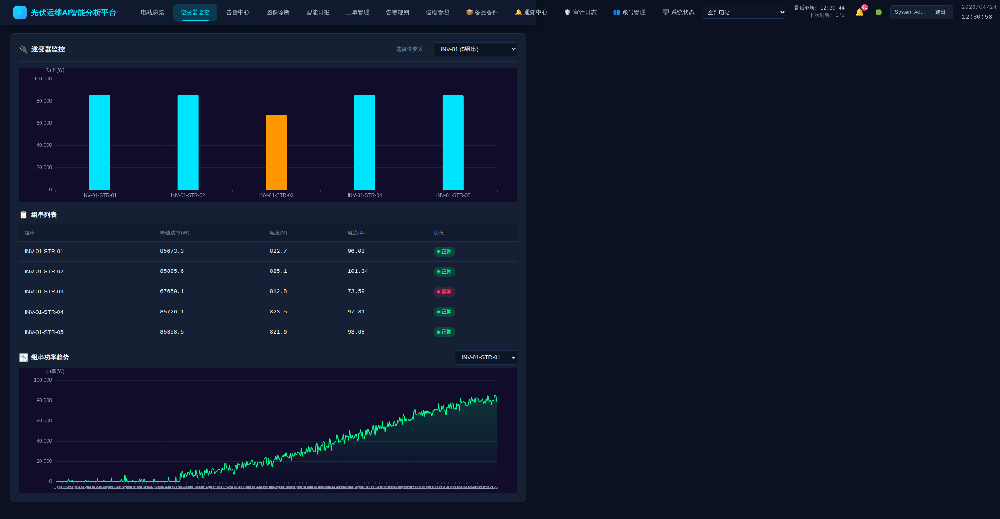
图 2：逆变器监控 — 组串功率曲线、组串状态网格、异常检测
5. 告警中心
统一管理所有电站的告警事件，支持多维度筛选、状态流转（活跃 → 已确认 → 已解决）和批量操作。
- 筛选条件 — 类型（全部/功率/温度/通讯等）、严重度（严重/警告/提示）、状态（活跃/已确认/已解决）
- 告警列表 — 时间倒序排列，含告警详情、电站名称、触发时间
- 操作 — 确认告警、解决告警、转工单、删除
- 实时推送 — WebSocket 实时推送新告警，桌面通知提醒
- 统计面板 — 活跃告警总数、今日新增、已解决数
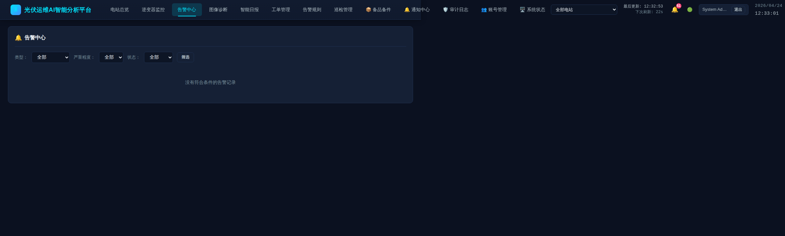
图 3：告警中心 — 多维度筛选、告警列表、状态管理、转工单
6. 图像诊断
基于 AI 视觉模型的逆变器/组串图像缺陷检测功能，支持上传图片并由大模型自动识别缺陷类型、位置和严重程度。
- 图片上传 — 支持拖拽或选择上传，支持多张批量上传
- AI 分析 — 调用 qwen-vl-max 视觉大模型进行缺陷检测
- 缺陷列表 — 显示检出的缺陷类型、位置、置信度、严重等级
- 分析历史 — 保存历史分析记录，支持回溯查看
- 转工单 — 一键将诊断结果转为缺陷修复工单
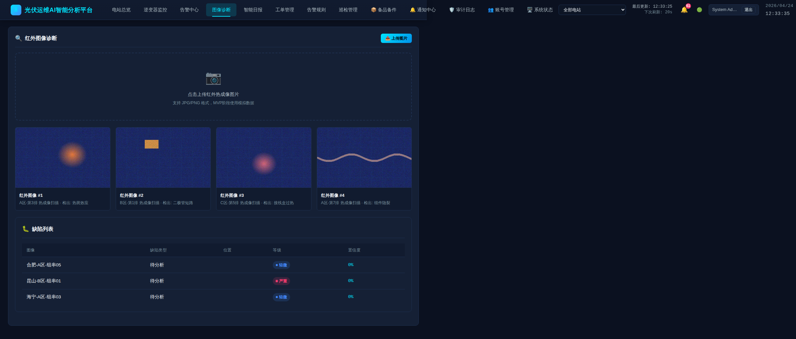
图 4：图像诊断 — 图片上传区、AI 分析结果、缺陷检测列表
7. 智能日报
利用 AI 大语言模型自动生成结构化的运维日报，整合当日发电数据、气象数据、告警统计、工单处理情况，提供智能化的运维建议。
- 一键生成 — 点击「生成日报」按钮，自动汇总当日数据并调用 LLM 生成报告
- 电站切换 — 按电站或查看全部电站汇总
- 报告内容 — 发电概况、气象数据、告警统计、AI 智能分析
- AI 模型 — 通义千问-plus 自动生成运维建议
- 降级方案 — LLM 不可用时自动返回原始数据报告
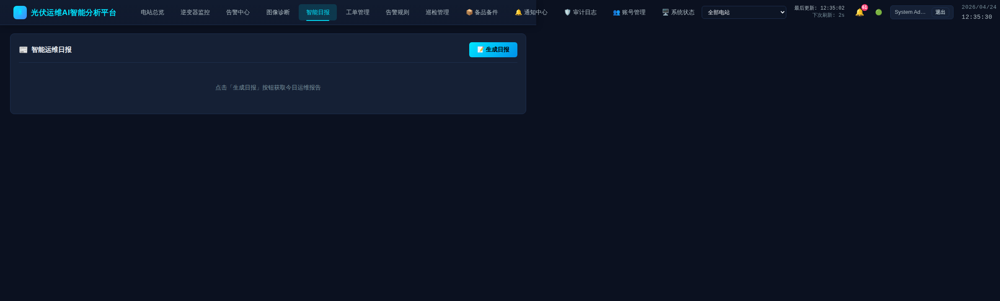
图 5：智能日报 — 一键生成、AI 分析、结构化运维报告
8. 工单管理
看板（Kanban）式工单管理系统，覆盖工单全生命周期，支持拖拽流转、多维筛选和协作备注。
- 5 个状态列 — 待处理 → 已分配 → 进行中 → 已完成 → 已关闭
- 拖拽流转 — 拖拽工单卡片跨列变更状态
- 筛选器 — 按状态、优先级（紧急/高/中/低）、电站、排序方式过滤
- 搜索 — 按标题/描述关键词搜索工单
- 工单详情 — 查看完整信息、添加备注、关联告警
- 统计面板 — 待处理工单数、紧急工单数、平均完成时间、今日完成数
- 创建工单 — 支持手动创建，关联电站、类型（缺陷修复/定期维护/巡检/清洗）、优先级、指派人
- 实时同步 — WebSocket 实时更新，多端协同可见
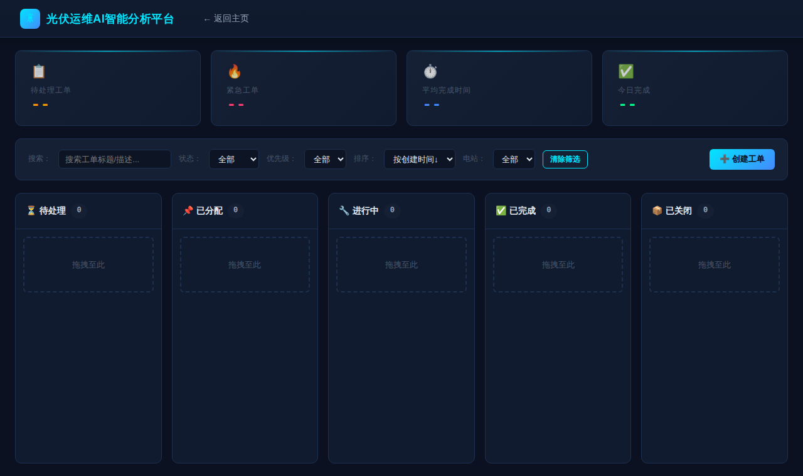
图 6：工单管理 — 看板视图、5 状态列、拖拽流转、多维筛选
9. 告警规则
自定义告警规则引擎，支持多种检测类型、阈值配置、定时评估，实现从规则定义到告警触发的全自动化流程。
- 规则类型 — 组串功率偏低、零输出、组串间差异、温度过高/过低、辐照度过低、逆变器离线等
- 阈值配置 — 每种规则可设置独立阈值、严重级别（严重/警告/提示）
- 电站关联 — 规则可按电站维度独立配置
- 启用/禁用 — 一键开关规则，灵活控制告警触发
- 自动评估 — 定时调度器自动评估所有规则（默认 5 分钟间隔）
- 评估日志 — 记录每次评估结果，支持回溯分析
- 初始化默认规则 — 一键为电站创建 9 条标准告警规则模板
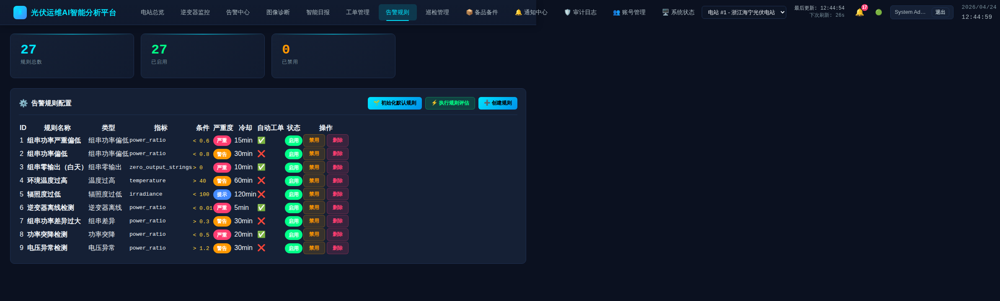
图 7：告警规则 — 规则列表、阈值配置、启用/禁用、自动评估
10. 巡检管理
巡检计划与任务管理系统，支持定期巡检和专项巡检的排期、任务分解和执行跟踪。
- 巡检计划 — 创建巡检计划，设置类型（常规/专项）、频率（daily/weekly/monthly）、负责人
- 任务分解 — 每个巡检计划自动生成具体任务清单
- 到期提醒 — 自动计算下次巡检到期时间，到期前提醒
- 发电预测 — 集成明日发电预测图表，辅助巡检排期
- 统计分析 — 巡检计划总数、进行中计划、任务总数、待执行任务
- CRUD 操作 — 创建、编辑、查看任务、删除巡检计划
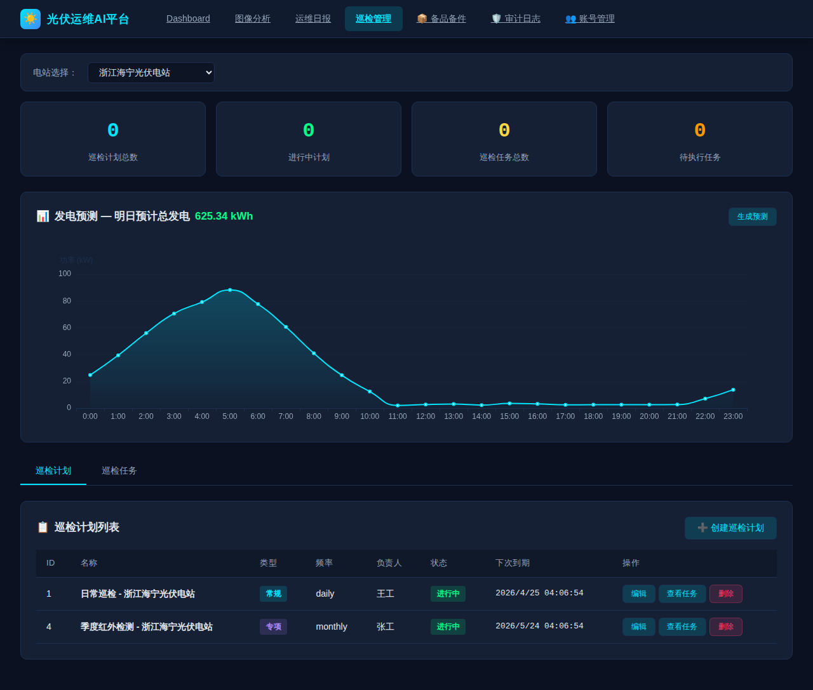
图 8：巡检管理 — 巡检计划列表、发电预测图表、任务管理
11. 备品备件
备件库存管理系统，跟踪光伏组件、逆变器配件、传感器等备件的数量、价值和库存状态。
- 库存总览 — 备件总数、库存总价值、低库存预警数、分类数
- 备件台账 — 编码、名称、分类、规格、库存量、最低库存、单价、所属电站
- 出入库操作 — 入库 / 出库 / 退库，自动更新库存数量和金额
- 库存预警 — 库存低于最低阈值时自动标记"缺货"
- 出入库记录 — 完整的库存变更流水记录
- 多维筛选 — 按分类（电气/机械/组件/耗材/其他）、电站、库存状态过滤
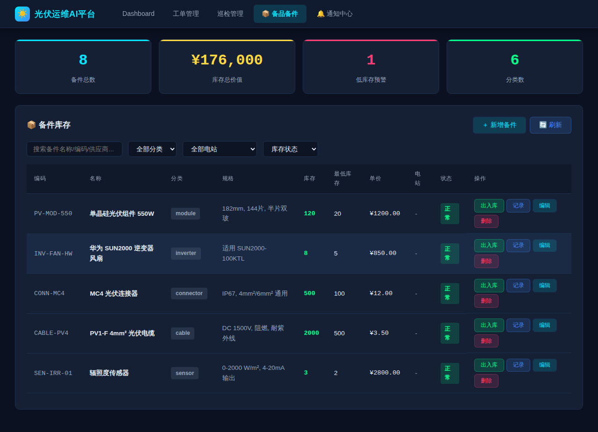
图 9：备品备件 — 库存台账、出入库管理、库存预警、多维筛选
12. 通知中心
统一的消息通知中心，聚合系统告警、工单动态、巡检提醒、库存预警等多种消息源。
- 消息分类 — 全部 / 未读 / 告警 / 工单 / 巡检
- 严重度标识 — 🔴 严重 / 🟡 警告 / 🔵 信息
- 统计面板 — 各类别消息数量、24h 新增数
- 操作 — 标记已读、全部已读、删除单条
- 实时推送 — WebSocket 实时接收新通知
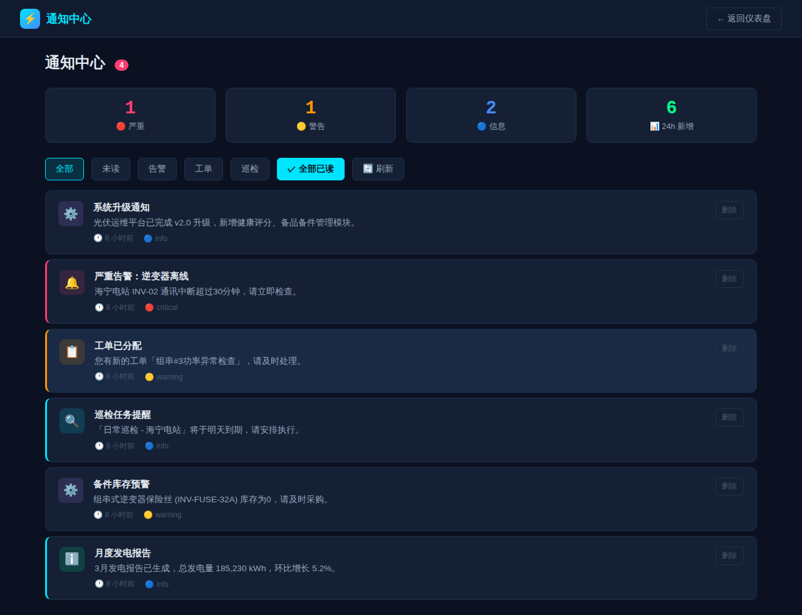
图 10：通知中心 — 消息聚合、严重度分级、实时推送
13. 审计日志
全量操作审计追踪，记录所有用户的登录、创建、更新、删除、导出等操作，满足安全合规要求。
- 统计面板 — 今日操作数、活跃用户数、最高频操作、删除事件
- 操作频率趋势 — 近 7 天操作量柱状图
- 多维筛选 — 日期范围、操作类型（登录/登出/创建/更新/删除/导出/导入）、用户、资源类型
- 审计表格 — 时间、用户、操作、资源、IP 地址、详情 JSON
- 安全监控 — 异常登录、频繁删除等高风险操作高亮告警
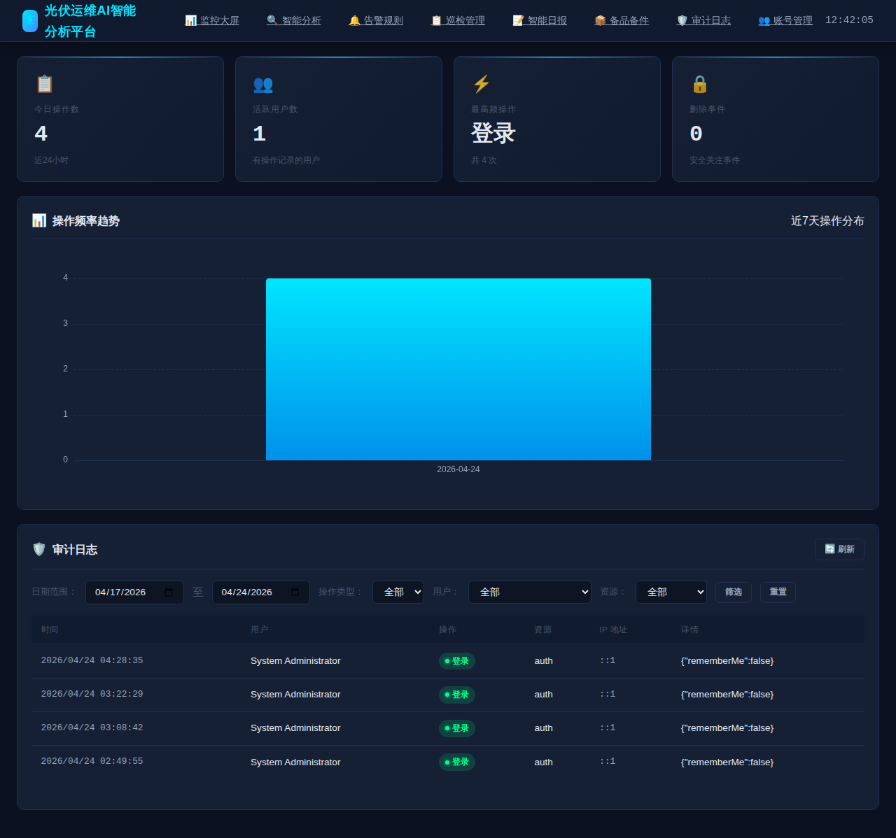
图 11：审计日志 — 操作统计、趋势图表、多维筛选、全量追踪
14. 账号管理
用户账号与权限管理系统，支持多角色、多电站维度的精细化权限控制。
- 用户统计 — 总用户数、活跃用户、管理员数、在线用户
- 用户列表 — 用户名、显示名称、邮箱、角色、状态、最后登录时间
- 角色体系 — 管理员（admin）/ 经理（manager）/ 运维员（operator）/ 访客（viewer）
- 操作 — 新增账号、编辑信息、启用/禁用、修改密码、删除
- 电站权限 — 按电站维度分配用户访问权限
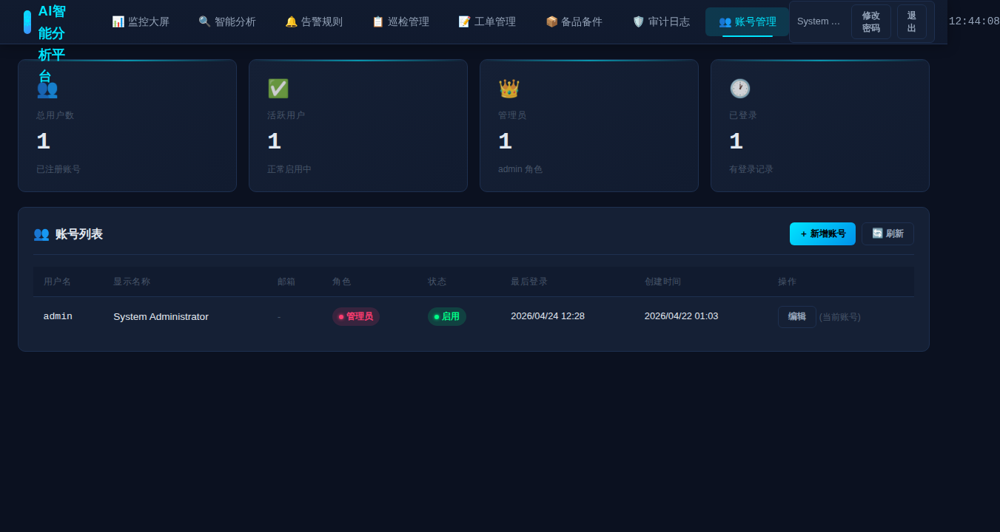
图 12：账号管理 — 用户统计、角色管理、权限分配
15. 系统状态
系统运行状态监控面板，实时展示服务健康度、数据库状态、后台任务调度情况。
- 服务运行时间（Uptime）
- 数据库状态（连接数、文件大小）
- 后台调度器状态（告警评估、预测生成、自动备份、实时模拟）
- WebSocket 连接状态
- 系统资源占用（内存、磁盘）
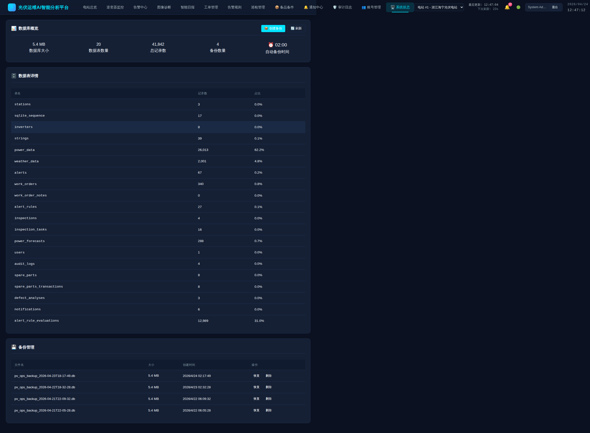
图 13：系统状态 — 服务监控、调度器状态、资源占用
16. 角色权限矩阵
| 功能模块 |
管理员 |
经理 |
运维员 |
访客 |
| 电站总览 | ✅ | ✅ | ✅ | ✅ 只读 |
| 逆变器监控 | ✅ | ✅ | ✅ | ✅ 只读 |
| 告警中心 | ✅ 全部操作 | ✅ 确认/解决 | ✅ 确认 | ✅ 只读 |
| 图像诊断 | ✅ | ✅ | ✅ | ❌ |
| 智能日报 | ✅ | ✅ | ✅ | ✅ 只读 |
| 工单管理 | ✅ 创建/编辑/删除 | ✅ 创建/编辑 | ✅ 处理 | ❌ |
| 告警规则 | ✅ 全部操作 | ✅ 启用/禁用 | ✅ 查看 | ❌ |
| 巡检管理 | ✅ 创建/编辑/删除 | ✅ 创建/编辑 | ✅ 执行 | ✅ 只读 |
| 备品备件 | ✅ 全部操作 | ✅ 出入库 | ✅ 出入库 | ✅ 只读 |
| 审计日志 | ✅ 查看 | ❌ | ❌ | ❌ |
| 账号管理 | ✅ 全部操作 | ❌ | ❌ | ❌ |
| 系统状态 | ✅ | ✅ | ✅ | ❌ |